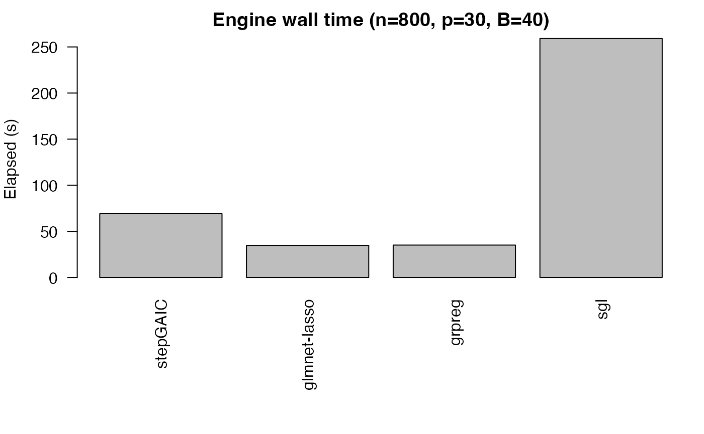

Benchmark: Stepwise vs Grouped vs Glmnet Engines
Frédéric Bertrand
Cedric, Cnam, Parisfrederic.bertrand@lecnam.net
2025-12-03
Source:vignettes/benchmark.Rmd
benchmark.RmdThis vignette provides quick timing comparisons across engines on a synthetic dataset. Timings are indicative (single run) and depend on your machine and BLAS.
What you’ll learn
- How to benchmark
sb_gamlss()with differentenginesettings (stepwise, glmnet, grpreg, sgl). - How to collect elapsed timings via
system.time()and visualise them with base R plots. - How to extend the template to include your own custom configurations
(e.g., alternative
glmnet_alpha).
library(gamlss)
#> Loading required package: splines
#> Loading required package: gamlss.data
#>
#> Attaching package: 'gamlss.data'
#> The following object is masked from 'package:datasets':
#>
#> sleep
#> Loading required package: gamlss.dist
#> Loading required package: nlme
#> Loading required package: parallel
#> ********** GAMLSS Version 5.5-0 **********
#> For more on GAMLSS look at https://www.gamlss.com/
#> Type gamlssNews() to see new features/changes/bug fixes.
library(SelectBoost.gamlss)
set.seed(123)
n <- 800
p <- 30
X <- replicate(p, rnorm(n))
colnames(X) <- paste0("x", 1:p)
eta <- 1 + X[,1]*1.0 - X[,3]*1.2 + X[,5]*0.8
y <- gamlss.dist::rNO(n, mu = eta, sigma = 1)
dat <- data.frame(y, X)
engines <- list(
list(name="stepGAIC", args=list(engine="stepGAIC")),
list(name="glmnet-lasso", args=list(engine="glmnet", glmnet_alpha=1)),
list(name="grpreg", args=list(engine="grpreg", grpreg_penalty="grLasso")),
list(name="sgl", args=list(engine="sgl", sgl_alpha=0.9))
)
res <- data.frame(engine=character(), elapsed=numeric(), stringsAsFactors = FALSE)
for (e in engines) {
cat("Running", e$name, "...\n")
t <- system.time({
fit <- sb_gamlss(
y ~ 1, data = dat, family = gamlss.dist::NO(),
mu_scope = as.formula(paste("~", paste(colnames(X), collapse = " + "))),
B = 40, pi_thr = 0.6, pre_standardize = TRUE, trace = FALSE
)
# merge engine-specific args and refit quickly with small B to avoid overuse
fit <- do.call(sb_gamlss, modifyList(list(
formula = y ~ 1, data = dat, family = gamlss.dist::NO(),
mu_scope = as.formula(paste("~", paste(colnames(X), collapse = " + "))),
B = 40, pi_thr = 0.6, pre_standardize = TRUE, trace = FALSE
), e$args))
})
res <- rbind(res, data.frame(engine=e$name, elapsed=t[["elapsed"]]))
}
#> Running stepGAIC ...
#> Running glmnet-lasso ...
#> Running grpreg ...
#> Running sgl ...
print(res)
#> engine elapsed
#> 1 stepGAIC 68.505
#> 2 glmnet-lasso 34.076
#> 3 grpreg 36.121
#> 4 sgl 260.046
# simple barplot
op <- par(mar=c(8,4,2,1)); barplot(res$elapsed, names.arg = res$engine, las = 2,
ylab = "Elapsed (s)", main = "Engine wall time (n=800, p=30, B=40)"); par(op)